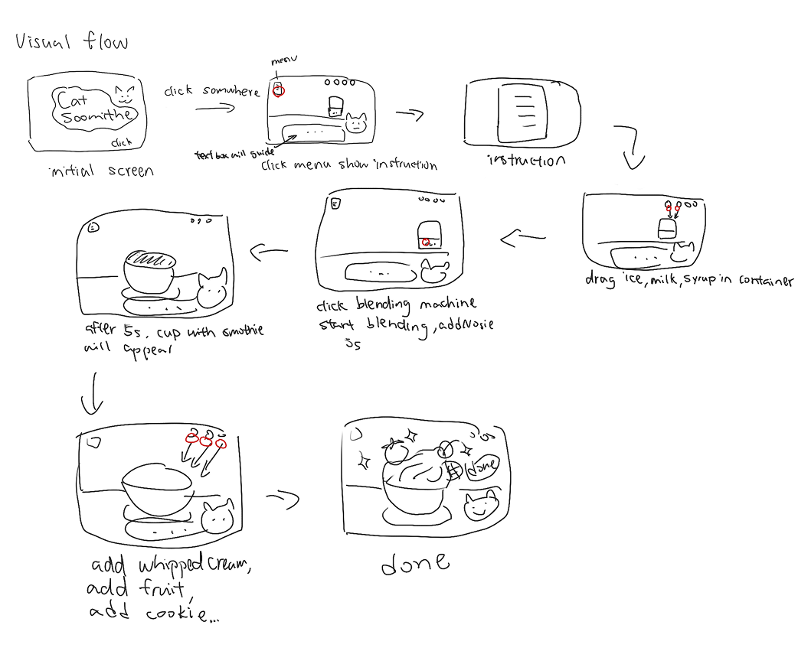
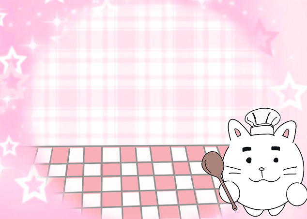
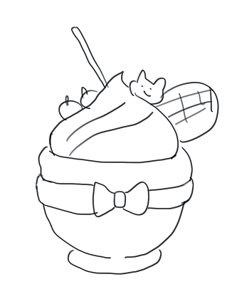
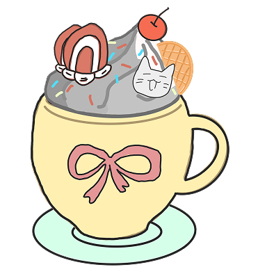
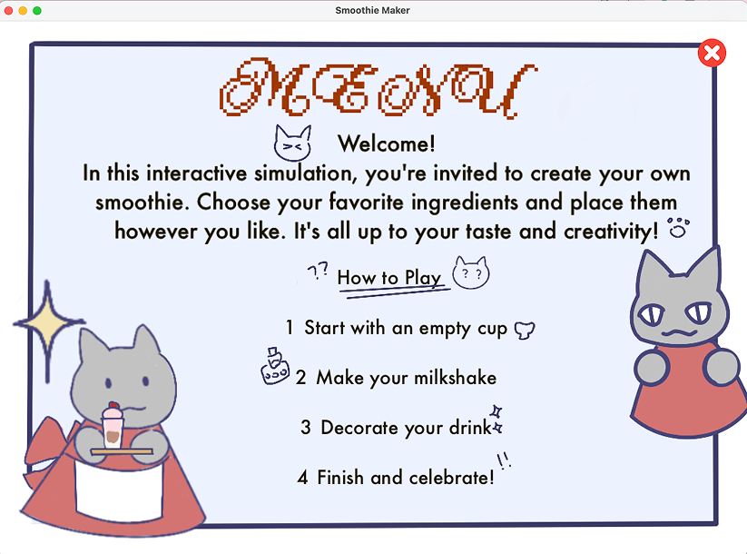
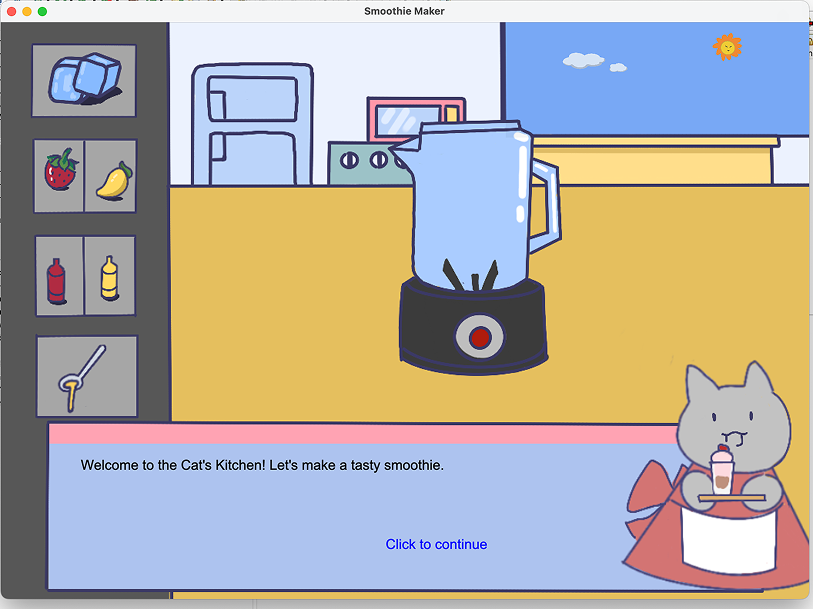
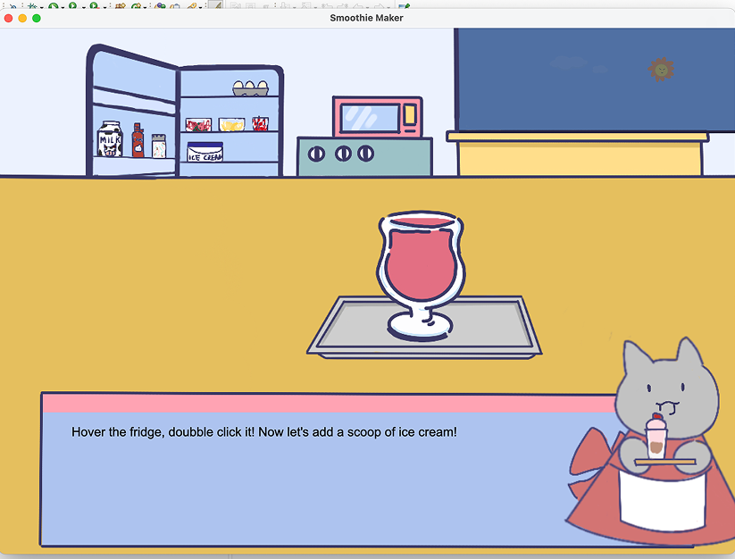
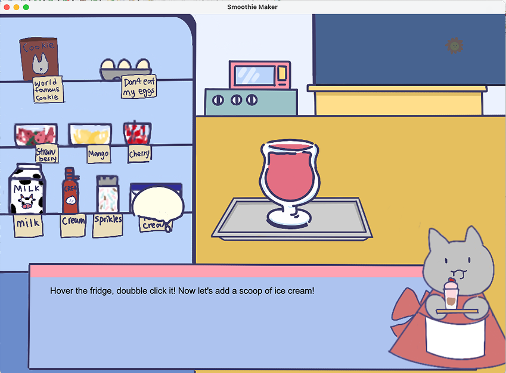
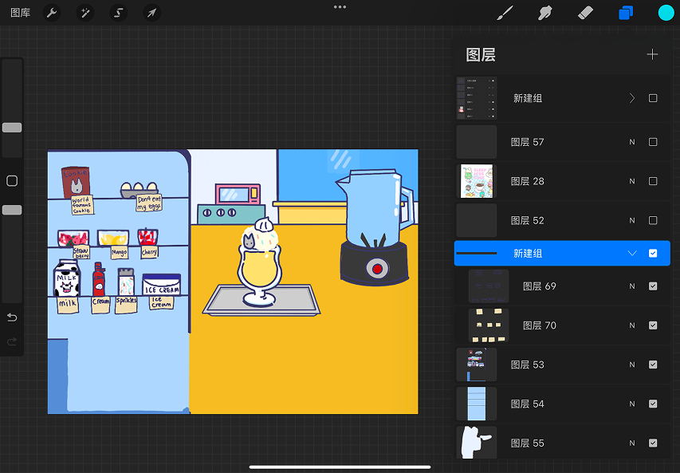
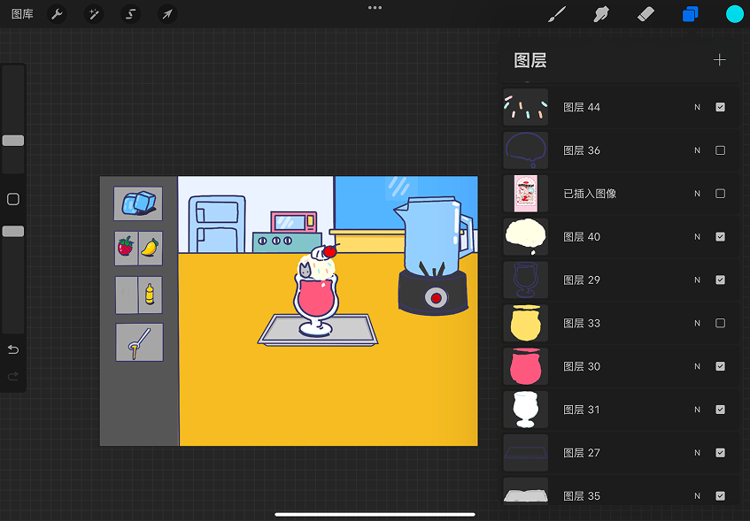

Game UI · Illustration / 2024
Dessert Simulator
A playful Java game where a cat guide helps players build their own desserts. I created the illustrations, interface, animations, and code, shaping the experience from first sketch to playable game.
Watch the project ↗- My role
- Design, illustration & development
- Context
- Independent project
- Tools
- Java · Eclipse · Procreate

Planning the game
The game centres on a simple action: drag ingredients into a container and see what happens. I wanted the interface to feel like a playful invitation rather than a set of instructions. A cat guide, familiar dessert shapes, and gentle colours establish that tone.

Simplifying the first interface
The early prototype combined too many graphic styles. I simplified the shapes, moved to a pastel palette, and created hand-drawn assets in Procreate. Repeating these choices across the menu, ingredients, and characters made the world feel more coherent.



Drawing and building the game
I developed the game independently in Java. Buttons and controls sit on the right to support the play flow, while the fridge groups ingredients for selection. Players can skip the guide’s dialogue, and a day-to-night animation adds a sense of time to the scene.




What I learned
Building both the artwork and the interactions let me see where visual decisions helped or complicated the game. The strongest improvement came from simplifying: fewer competing styles, clearer grouping, and a more consistent tone.
This project brought illustration, UI design, and development together in a playable experience. It shaped how I approach a visual identity as something that has to work in motion and in use.

